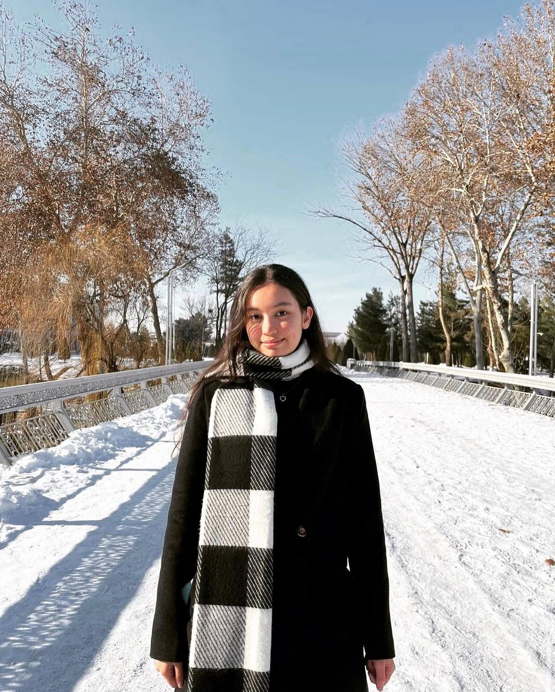
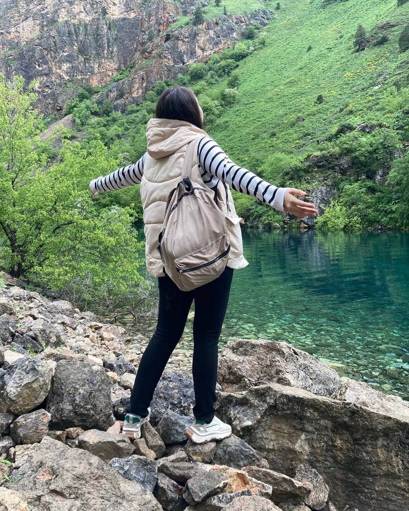
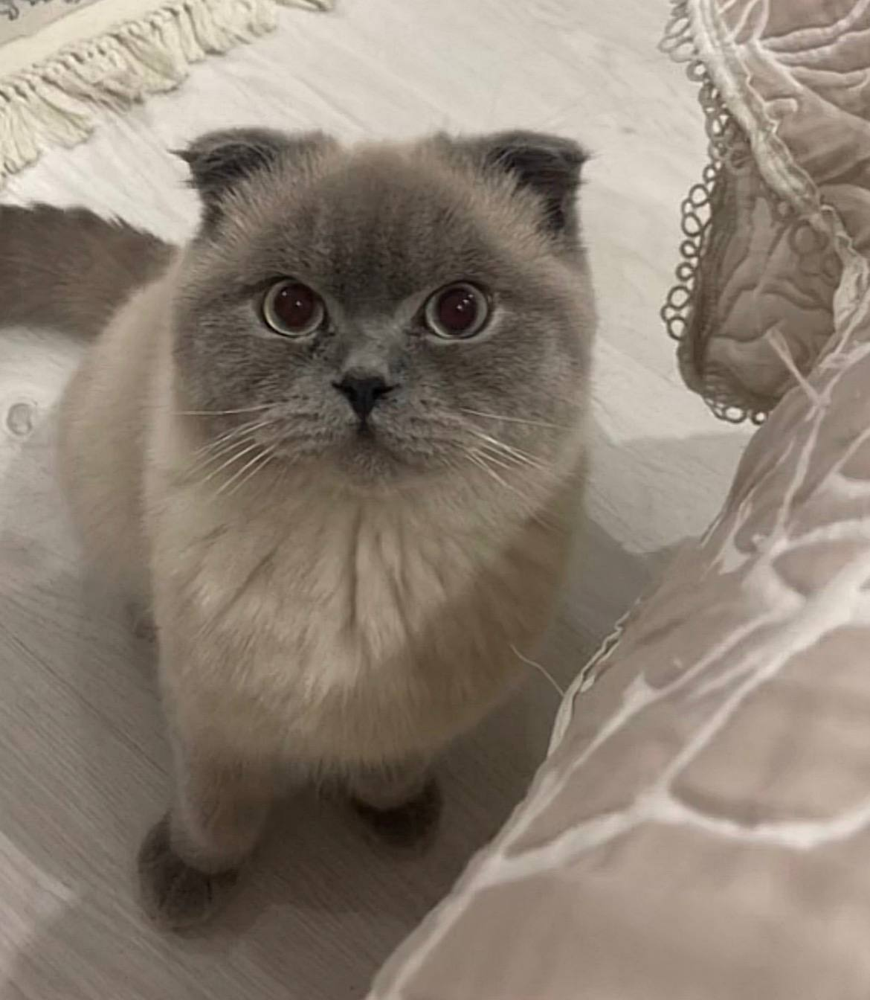
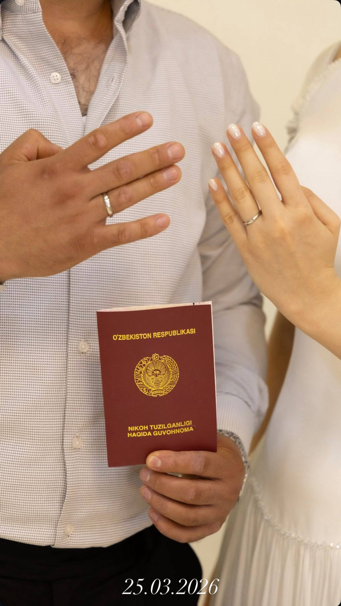

Чувствуешь глубже
Ты умеешь видеть за словами человека — его чувства, тревоги, настоящего его. Твоя чуткость делает мир рядом с тобой добрее.
С днём рождения, Ойдин.
Моя сестрёнка. Мой соулмейт.
Мой человек с самых пелёнок.

По родству мы двоюродные. По тому, что между нами, — просто родные. Есть люди, с которыми не нужно заново знакомиться после долгой разлуки. Ты для меня именно такой человек.
Даже если видимся всего раз в год, рядом с тобой сразу тепло. А когда приходит время уезжать — снова слёзы. Потому что прощаться с кусочком своего сердца всегда непросто.
Расстояние измеряется километрами.
А наша близость — объятиями.

Пусть впереди будет ещё столько встреч…Ты умеешь видеть за словами человека — его чувства, тревоги, настоящего его. Твоя чуткость делает мир рядом с тобой добрее.
Танцы, рисунки, гитара, книги. В тебе столько разных граней, и в каждой — твоя живая, увлечённая душа.
Психология, а теперь магистратура. Я горжусь твоим умом, твоей настойчивостью и тем, как ты ищешь собственный путь.

главный пушистый счастливчик ♡В том, как ты любишь Пуму, столько заботы и нежности. Для тебя он семья — маленькая душа, которую хочется оберегать.
Ты принимаешь многое близко к сердцу. Пусть это большое доброе сердце всегда встречает в ответ такую же бережность.
Нажми на любую историю. Здесь у каждой — пожелание для тебя.
В этом году в твоей истории появилась новая семья. Так радостно знать, что рядом с тобой Отабек — человек, с которым тебе хорошо и спокойно.
Пусть ваше понимание становится только глубже. Пусть будет уютный дом, общие мечты и тысячи маленьких поводов улыбнуться друг другу.
За ваше долгое-долгое счастье ♡
Сегодня тебе 22. И мне хочется, чтобы ты хотя бы на минутку увидела себя нашими глазами.
Ты — тот человек, рядом с которым тепло. Умная, тонко чувствующая, увлечённая. Ты замечаешь то, что другие пропускают. Умеешь любить всем сердцем — людей, животных, свои маленькие миры.
Мы знакомы с самых пелёнок. Выросли, стали взрослыми, у каждого появились свои дела и своя жизнь. Но для меня ты всё та же родная сестрёнка, которую хочется крепко обнять и ещё немного не отпускать.
Я желаю тебе беречь себя так же нежно, как ты бережёшь других. Не сомневаться в своей ценности. И знать: тебе не нужно ничего заслуживать, чтобы быть любимой.
Пусть учёба приносит открытия, любовь — спокойствие, дом — уют. Пусть рядом будут хорошие люди. И пусть жизнь оставляет тебе время для книг, фильмов, новых увлечений и простого счастья.
Спасибо, что ты есть, моя соулмейт.
Ты очень важна. Ты бесконечно любима.
Обнимаю крепко.
Твой брат ♡
Пусть самое заветное обязательно сбудется.